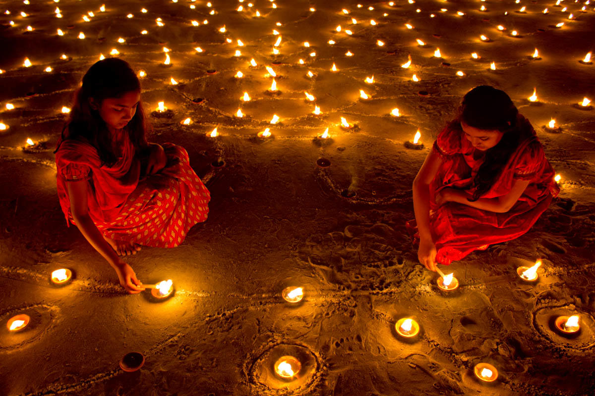
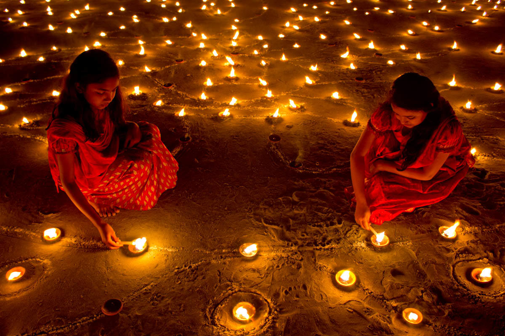
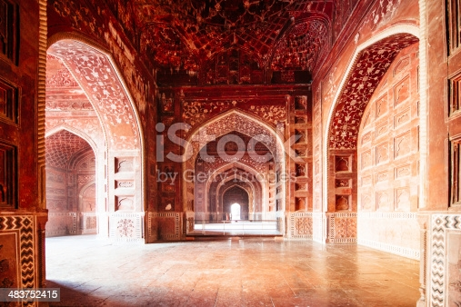
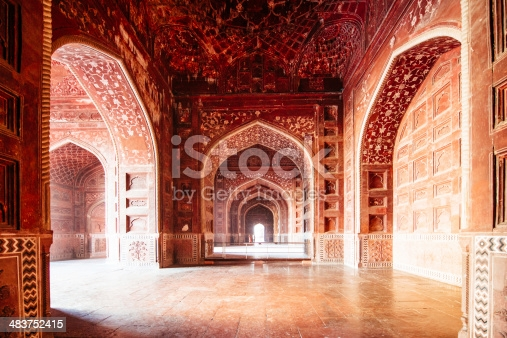

L'INDE,la festivité
UN CHOC CULTUREL
L’Inde est une destination pas comme les autres. Certains s’y rendent pour la beauté des paysages, notamment des
montagnes de l’Himalaya ou des belles plages de Goa, d’autres pour découvrir les incroyables traditions et coutumes de
cet immense pays, mais la plupart des voyageurs qui se rendent en Inde cherchent un véritable dépaysement, un choc
culturel que l’on ne peut vivre que là.
Entre racines traditionnelles et évolution moderne, l’Inde est un pays de contrastes, aussi beau qu’authentique.
Villes fourmillantes, traditions festives, cuisine épicée, climat extrême, pauvreté, beauté des paysages, spiritualité,ferveur, modernité, mixité religieuse et ethnique, biodiversité… L’Inde c’est tout ça et encore plus.

 

L'INCONTOURNABLE, LE TAJ MAHAL
Lorsqu’on parle de l’Inde, l’un des monuments les plus mythiques et majestueux qui vient à l’esprit est le Taj Mahal,
qui signifie « couronne du palais ».Construit en 1632 par l’empereur moghol, Shan Jahan, pour son épouse, Arjumand Banu Begum, aussi appelée, Mumtaz, cet
édifice n’a été achevé que 25 ans plus tard, soit en 1653. Le Taj Mahal est un lieu hautement touristique qui accueille
près de 10 millions de touristes chaque année.
Le Taj Mahal est un lieu qui parle d’amour, mais aussi de la vie après la mort. D’ailleurs, sur le bord des fenêtres,
des versets du Coran, qui en parlent, ont été écrits. Les légendes autour de la construction du Taj Mahal sont assez
sanglantes.
La beauté de Taj Mahal est unique, dans le sens où l’intelligence utilisée dans sa conception est phénoménale. Le dôme
du Taj Mahal est une structure qui attire les regards.

 
